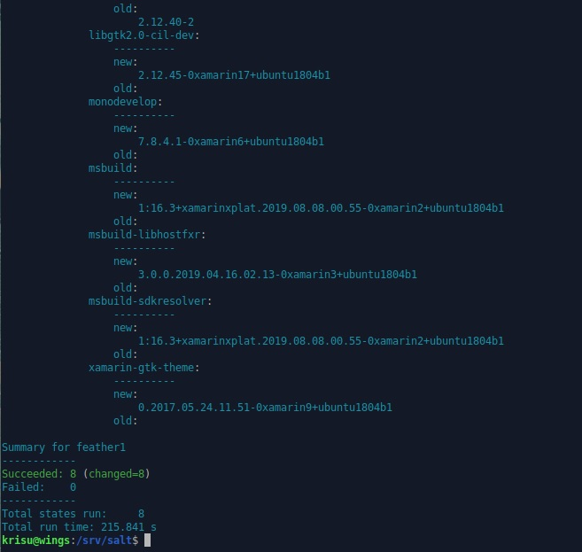

Modulikimara
29.04.2020, Kristian KoponenTehtävänanto
Palvelinten hallinta H4
Käytetyt laitteet
Windows 10
| Prosessori: | Intel(R) Core(TM) i5-2500K @ 3.30Ghz |
|---|---|
| Keskusmuisti: | 8GiB DDR3 |
| Näytönohjain: | Nvidia GTX 970 |
| Käyttöjärjestelmä: | Windows 10 64-bit |
VirtualBox 6.16
xubuntu 18.04.4 amd64 ISO
Alkutoimet
Edellisten harjoitusten jälkeen virtuaalikoneeni ovat lakanneet toimimasta. Päivän puntaroinnin jälkeen päättelin, että Windows Sandboxin asennus on sotkenut virtualisoinnin. Ennen kuin hoksasin tämän, poistin virtuaalikoneet ja loin ne uudelleen. Ongelma ratkesi kun laitoin Windows Sandboxin pois käytöstä. Virtuaalikoneet on siis suotta tehty uudelleen, joten valmistelen SaltStackin ensimmäisen viikon tapojen mukaisesti. H1 - Hello Salt!
Tässä lyhyesti komentorivisyöte. Selitykset yksityiskohtaisesti komennoille voi lukea ensimmäisen viikon sivuilta tehtävästä Asenna Salt
Alla siis asennetaan salt-master ja salt-minion samalle koneelle, sekä tehdään minion-asetukset ja hyväksytään avain masterilla. Lopussa testaus.
$ sudo apt-get update
$ sudo apt-get install salt-master salt-minion -y
$ hostname -I
192.168.1.127
$ sudoedit /etc/salt/minion
$ cat /etc/salt/minion
master: 192.168.1.127
id: wings
$ sudo systemctl restart salt-minion.service
$ sudo salt-key -A
The following keys are going to be accepted:
Unaccepted Keys:
wings
Proceed? [n/Y] y
Key for minion wings accepted.
$ sudo salt '*' cmd.run 'whoami'
wings:
root
Modulikimara
Modulikimara. Asenna 6 saltin tilaa/modulia. Tässä siis yksi tila/moduli on esimerkiksi Apachen asennus package-file-service rakenteella. Tiloista/moduleista enintään neljä voi olla muiden tekemiä, esimerkiksi verkosta löytyneitä. Muista lähdeviitteet ja lisenssit. Käytä tiloja, joita et ole aiemmin käyttänyt ja joita ei ole käsitelty tunnilla. Tilojen tulee tehdä muutakin kuin pelkästään asentaa yksittäinen paketti, esimerkiksi tehdä sille asetuksia (siis vaikka package-file, ei pelkkä package). Asennettavat ja konfiguroitavat ohjelmat voivat olla mitä vain valitset: palvelimia, graafisen käyttöliittymän ohjelmia, komentorviohjelmia, vapaita, suljettuja... Muista testata lopputulos käyttämällä ohjelmaa sen pääasiallisessa käyttötarkoituksessa. Jos jäät jumiin, tee kaikki mitä osaat ja dokumentoi ongelmat, niin ratkotaan niitä yhdessä.
Pinta (Asennus ja konfiguraatio)
Asennetaan avoimen lähdekoodin kuvankäsittelyohjelma Pinta.
$ sudo apt-get install pinta -yKäydään muokkaamassa Pintan graafisesta käyttöliittymästä asetuksia. Ei heti alkuun löydy mitään huomattavaa asetusta, mutta viivain olisi varmaan hyvä näkyä. Laitetaan päälle.
Katsotaan mitä tiedostoja Pinta muokkaa asetuksia varten. Tarkastellaan siis tiedostot /etc/ ja $HOME kansioista ja ja järjestetään viimeksi muokatun mukaan.
$ find /etc/ $HOME -printf '%T+ %p\n'|sortTulosteest eivät näytä mitään olennaista tulosta. Kokeillaan sulkea Pinta, josko muutokset tapahtuvat vasta kun sovellus suljetaan.
2020-04-29+19:27:32.9516647800 /home/krisu/.config/Pinta/layouts.xml
2020-04-29+19:27:32.9556667800 /home/krisu/.config/Pinta
2020-04-29+19:27:32.9556667800 /home/krisu/.config/Pinta/palette.txt
2020-04-29+19:27:32.9556667800 /home/krisu/.config/Pinta/settings.xml
Nyt muutoksia näkyy käyttäjän kotihakemiston .config kansiossa. settings.xml näyttää olennaiselta. Tarkastellaan sisältöä.
$ less ~/.config/Pinta/settings.xml
<U+FEFF><settings>
<setting name="ruler-metric" type="System.Int32">0</setting>
<setting name="window-maximized" type="System.Boolean">True</setting>
<setting name="ruler-shown" type="System.Boolean">True</setting>
<setting name="toolbar-shown" type="System.Boolean">True</setting>
<setting name="pixel-grid-shown" type="System.Boolean">False</setting>
<setting name="last-dialog-directory" type="System.String">/home/krisu/Pictures</setting>
</settings>
Asetustiedostossa näkyy arvot viivaimen yksiköille, ikkunan maksimoimiselle ja viivaimen, työkalupalkin, pikseliruudukon näkyvyydelle, sekä viimeksi muokattujen tiedostojen sijainnit. Ei muutettu muuta kuin viivain päälle, joten voidaan hyvin kopioida koko tiedosto Saltin käytettäväksi.
Luodaan kansio Saltin Pinta-tiloille.
$ sudo mkdir -p /srv/salt/
$ cd /srv/salt
$ sudo mkdir pinta
$ sudo mkdir pinta/templatesAsetetaan top.sls tiedosto, sekä init.sls tiedosto Pintan asennukseen ja konfiguraatioon.
$ sudoedit top.sls
$ cat top.sls
base:
'*':
- pinta
$ sudoedit pinta/init.sls
$ cat pinta/init.sls
pinta:
pkg.installed
/home/krisu/.config/Pinta/settings.xml:
file.managed:
- source: salt://pinta/templates/settings.xml
- user: krisu
- group: krisu
- mode: 664
- makedirs: True
/etc/skel/.config/Pinta/settings.xml:
file.managed:
- source: salt://pinta/templates/settings.xml
- makedirs: True
Nyt init.sls kansiossa viitataan /srv/salt/pinta/templates/ kansiossa sijaitsevaan settings.xml:n, joka siirretään sekä käyttäjän krisu asetustiedostoihin, että uusien käyttäjien luonnissa käytettyyn /etc/skel/ mallihakemistoon. Kopioidaan settings.xml tänne.
$ sudo cp ~/.config/Pinta/settings.xml /srv/salt/pinta/templates/
Koitetaan ajaa tila orjalle.
$ sudo salt '*' state.apply pintaKaikki meni läpi onnistuneesti.
C# compiler
Rinnakkaisen C#-kurssin vuoksi haluan kokeilla kääntää C#-koodia toimintakuntoon Linux-koneella.
Lyhyen etsimisen jälkeen törmäsin Mono-projektiin. Asennetaan mono-complete paketti.
$ sudo apt-get install mono-complete -yKäyttö ei vaikuta kovin monimutkaiselta, joten luodaan C#-koodia.
$ cd
$ mkdir Code
$ cd Code
$ nano hello.cs
$ cat hello.cs
using System;
class HelloWorld {
static void Main() {
Console.WriteLine("Hello mono!");
}
}
Käytetään monoa kääntämiseen ja käännetyn ohjelman suorittamiseen.
$ mcs -out:hello.exe hello.cs
$ mono hello.exe
Hello mono!Kokeillaan saadaanko samaa tehtyä SaltStackilla. Ensin luodaan tilat monon asennukseen ja hello.cs -tiedoston kirjoittamiseen.
$ cd /srv/salt/
$ sudo mkdir mono
$ sudo mkdir mono/templates
$ sudoedit mono/init.sls
$ cat mono/init.sls
mono-complete:
pkg.installed
/home/krisu/Code/hello.cs:
file.managed:
- source: salt://mono/templates/hello.cs
- user: krisu
- group: krisu
- mode: 664
- makedirs: TrueKopioidaan hello.cs Saltin templates kansioon.
$ sudo cp ~/Code/hello.cs /srv/salt/mono/templates/Testataan tässä välissä tiloja.
$ sudo salt '*' state.apply mono
wings:
----------
ID: mono-complete
Function: pkg.installed
Result: True
Comment: All specified packages are already installed
Started: 21:00:02.790815
Duration: 1943.988 ms
Changes:
----------
ID: /home/krisu/Code/hello.cs
Function: file.managed
Result: True
Comment: File /home/krisu/Code/hello.cs is in the correct state
Started: 21:00:04.739807
Duration: 19.64 ms
Changes:
Summary for wings
------------
Succeeded: 2
Failed: 0
------------
Total states run: 2
Total run time: 1.964 s
Luodaan uusi tila, joka ajaa mcs-komennon komentorivillä. Tällä ajetaan mcs komento, jos hello.exe tiedostoa ei vielä ole ja hello.cs on olemassa.
$ sudoedit /srv/salt/mono/init.sls
$ cat /srv/salt/mono/init.sls
...
compilehello:
cmd.run:
- name: mcs -out:/home/krisu/Code/hello.exe /home/krisu/Code/hello.cs
- unless: /home/krisu/Code/hello.exe
- require:
- file: /home/krisu/Code/hello.cs
Ajetaan tilat orjalle.
$ sudo salt '*' state.apply mono
wings:
...
----------
ID: compilehello
Function: cmd.run
Name: mcs -out:/home/krisu/Code/hello.exe /home/krisu/Code/hello.cs
Result: True
Comment: unless execution succeeded
Started: 21:14:08.226842
Duration: 41.257 ms
Changes:
Summary for wings
------------
Succeeded: 3
Failed: 0
------------
Total states run: 3
Total run time: 1.993 s
Poistetaan vielä hello.exe tiedosto ja ajetaan sitten uudelleen, jotta nähdään suorittaako Salt komennon oikein.
$ rm ~/Code/hello.exe
$ sudo salt '*' state.apply monoKuvankaappauksesta näkyy, että lopussa vielä testasin, että hello.exe toimii kuten pitää. Ja se toimii.
Testaan vielä toimiiko komento Saltin kautta.
$ sudo salt 'wings' cmd.run 'mono /home/krisu/Code/hello.exe'
wings:
Hello mono!
Näyttää toimivan.
MonoDevelop
Jatkan Monolla. Tällä kertaa tahdon asentaa MonoDevelop kehitysympäristön (IDE). Asennus-sivulta selviää että, MonoDevelopia ei kuitenkaan löydy valmiiksi apt pakettimanagerista. Täytyy luoda tila, jolla manageriin saadaan paketin sijainti ja avain.
SaltStackin dokumentoinnista löytyy komentt salt.states.pkgrepo, jolla tämän luulisi hoituvan.
Luodaan aluksi vaaditut kansiot ja tiedostot saltin kansioihin.
$ cd /srv/salt
$ sudo mkdir monodevelop
$ sudoedit monodevelop/init.sls
$ cat monodevelop/init.sls
monodevelop-repository:
pkgrepo.managed:
- humanname: MonoDevelop
- name: deb https://download.mono-project.com/repo/ubuntu vs-bionic main
- dist: vs-bionic
- file: /etc/apt/sources.list.d/mono-official-vs.list
- keyid: 3FA7E0328081BFF6A14DA29AA6A19B38D3D831EF
- keyserver: keyserver.ubuntu.com
Yllä olevalla tilalla teoriassa haemme monodevelop paketin apt pakettimanageriin.
- humannamen tarkoitus jäi itselleni vähän epäselväksi. Se luo nimiarvon repo-tiedostoihin /etc/yum.repos.d/ kansiossa.
- name kohtaan laitetaan deb repon lähde
- dist määrittelee mitä pakettia tulisi käyttää. Nyt myöhemmin luettuna "ei tarpeellinen" yleensä
- file tiedostonimi sen repositoryn konfigurointisijainnin .listille. Koko sijainti ja tarkistus että se on oikeassa hakemistossa.
- keyid ID, jolla GPG-avain asennetaan.
- keyserver palvelin josta GPG-avain haetaan.
Kokeillaan ajaa tila.
$ sudo salt '*' state.apply monodevelop
wings:
----------
ID: monodevelop-repository
Function: pkgrepo.managed
Name: deb https://download.mono-project.com/repo/ubuntu vs-bionic main
Result: True
Comment: Configured package repo 'deb https://download.mono-project.com/repo/ubuntu vs-bionic main'
Started: 22:19:32.635625
Duration: 35714.39 ms
Changes:
----------
repo:
deb https://download.mono-project.com/repo/ubuntu vs-bionic main
Summary for wings
------------
Succeeded: 1 (changed=1)
Failed: 0
------------
Total states run: 1
Total run time: 35.714 s
Odotin virheilmoitusta, mutta näyttää menneen läpi ensimmäisellä yrityksellä. Tarkastetaan löytyykö monodevelop nyt aptista.
$ sudo apt-cache search 'monodevelop'
...
monodevelop - Development Environment for GNOME
monodevelop-nunit - NUnit plugin for MonoDevelop
monodevelop-versioncontrol - VersionControl plugin for MonoDevelopNäyttää löytyvän. Lisätään paketinasennustila.
$ sudoedit monodevelop/init.sls
...
monodevelop:
pkg.installed:
- require:
- pkgrepo: monodevelop-repositoryYllä tarkastetaan ensin onko monodevelop-repository tilaa ajettu, jos on niin asennetaan monodevelop. Koitetaan ajaa tila läpi.
Tilat näyttää menneen onnistuneesti läpi.
Kokeillaan vielä, että MonoDevelop toimii. Eipä toimi. Kokeilin vielä manuaalisesti asentaa, mutta aptin mukaan ohjelma on asennettu, mutta MonoDevelop ei suostu käynnistymään.
Hetken vietän hakukoneen parissa ja löydän StackOverflow langan, jossa jollakin on sama ongelma ja oli puuttuvia riippuvuuksia. mono-complete oli jo asennettu aiemmassa kohdassa, joten lähdin asentamaan gtk-sharp3 pakettia. Tämä on Graphical User Interface Toolkit Monoon ja .NETiin.
$ sudo apt-get install gtk-sharp3 -yTässä meneekin yllättäen huomattavan paljon aikaa. Jo parikymmentä minuuttia istuttu ja odoteltu. Ohjelma asentelee sertifikaatteja ja esikääntää jotain Monon tiedostoja.
Tällä välin haen muuta mahdollista selitystä sille miksei ohjelma suostunut käynnistymään. Löydän blogin, jossa ohjeistetaan asentamaan mono-devel, mutta ei sanaakaan gtk-sharp3:sta. Jatketaan odottelua...
Yli puoli tuntia meni gtk-sharp3 -paketin asentamisessa. Kokeillaan käynnistää MonoDevelop.
Näyttää siltä että odotus kannatti. Ohjelma lähti käyntiin ja sain luotua uuden projektin.
Lopputestaus puhtaalla minionilla.
Ajan tähän mennessä luodut tilat uudelle minionille. Jätän gtk-sharp3 paketin asentamatta, sillä tahdon testat tuleeko samat riippuvuudet mono-devel paketissa. Muokataan top.sls tiedostoa sisältämään kaikki tilat, jotka ollaan luotu. --- Ajan tähän mennessä luodut tilat uudelle minionille. Jätän gtk-sharp3 paketin asentamatta, sillä sen asennukseen menee todella paljon aikaa.
$ sudoedit top.sls
$ cat top.sls
base:
'*':
- pinta
- mono
- monodevelop
Ajetaan uudelle minionille.
$ sudo salt 'feather1' state.applyKaikki kahdeksan luotua tilaa meni läpi minionille.
~/Code/ kansiosta löytyy hello.cs ja hello.exe tiedostot.
~/Code$ mono hello.exe
Hello mono!
MonoDevelop ei tietenkään käynnisty, mutta tällä kertaa myös Pinta ei suostu käynnistymään. Pintasta tulee komentorivillä käynnistettäessä virheilmoitus puuttuvista Mono-paketeista. Tulkitsen asian niin, että SaltStack ei osaa asentaa riippuvuuksia oikein tietyille graafista käyttöliittymää hyödyntäville ohjelmille. Kokeilen asentaa Pintan ylintä riippuvuutta
$ sudo apt-cache depends pinta
pinta
Depends: mono-runtime
|Depends: libc6
|Depends: <libc6.1>
Depends: <libc0.1>
...
$ sudo apt-get install mono-runtime
...
Mono precompiling /usr/lib/mono/4.5/mscorlib.dll for amd64 (trying with LLVM, this might take a few minutes)...
...Näyttää siltä, että kyseessä on taas jokin ikuisuusprojekti kuten aiemmin monon tiedostojen kääntämisessä. Manuaalisesti Pintan asennukseen ei mennyt näin kauan, joten jokin on mennyt SaltStackin kautta asentaessa pahasti pieleen.
15 minuutin päästä mono-runtime on asentunut. Nyt Pinta käynnistyy. Poistan turhat riippuvudeet.
sudo apt-get autoremoveTuloste valittaa mono-complete ja mono-devel paketeista. Ajan ehdotetun komennon rikkinäisten asennusten korjaamiseksi.
sudo apt --fix-broken installTulosteessa näkyy jälleen sertifikaattien lisäilyä ja Monon kääntämistä kymmeniä minuutteja.
Kun kaikki virheet on korjattu, sekä Pinta, että MonoDevelop käynnistyvät. Huomiona vielä että Pintan asetuksissa on viivain laitettu päälle, eli ainakin ohjelman konfigurointi on onnistunut. Minionille ei asennettu gtk-sharp3 -pakettia erikseen.
Tällä hetkellä ei vielä tietoa mitä Salt-tiloissa on muutettava, että kaikki asentuvat oikein. Onko mono-riippuvuudet asennettava erikseen ennen Pintaa ja MonoDevelopia?